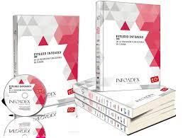

Publicidad Aplicada
Fundamentos de la Publicidad. Grado en Eventos y Protocolo
Ayose Lomba Pérez (LinkedIn)
(Universidad del Atlántico Medio). Primer Bloque.
Tema 1. Fundamentos de la publicidad
Teoría de la publicidad
Introducción
¿Qué busca la publicidad?
Busca construir una clase de discurso que lleve, por el camino más corto a la acción.
Entendiendo esta acción como la compra si estamos ante una campaña publicitaria o el voto ante una política.
Atrás han quedado…
los tiempos en los que las campañas intentaban convencer de que el producto era mejor (Publicidad Argumentativa)
por tanto queremos…
Encontrar o DISEÑAR una imagen TOTEM.
Queremos una imagen una frase que genere en el consumidor la Acción INMEDIATA
Historia
En el albor de los tiempos…
“se forjo un anillo para dominarlos a todos”
Durante décadas la publicidad utilizaba el Slogan como elemento que movía masas

El origen del slogan
Viene de la guerra. Grito con el que animar a las tropas.
¡¡¡Libertaaaaad!!!
Si una frase podía mover a un guerrero al sacrificio…
¿que no podría hacer por un producto?
Hoy en día
El publicitario ante el descrédito de la palabra prefiere trabajar con la… IMAGEN
OBJETIVO: Crear un mecanismo para “no pensar” consistente en la elaboración de un discurso sin huecos para el pensamiento
Se busca…
crear un discurso cuya presencia sea tan obvia, TAN POTENTE, y al mismo tiempo parecer TAN SIMPLE que el público, el espectador no pueda creer que merezca la pena detenerse ni un minuto a reflexioar sobre él.
El discurso de la publicidad
- Intenta aparentar inocencia y ligereza.
- Busca que el ciudadano NO PIENSE es el publicitario quien piensa por él.
- Se aleja de la función informativa.
Publicidad y Lenguaje Publicitario
La publicidad en un lenguaje ARTIFICIAL
El lenguaje publicitario surge como consecuencia de las propias limitaciones del lenguaje natural para satisfacer las necesidades comunicativas de la publicidad.
Si para decir algo basta con la lengua lingüistica, la publicitaria existe para NO DECIR NADA
Existe para:
- NO informar
- Ocultar el precio de las cosas
- El esfuerzo de conseguirlas
- La auténtica calidad de las mismas
- Las limitaciones de los productos
En definitiva que ese producto que nos desean vender no cambiará sustancialmente nuestras vidas
Conclusión
La publicidad ha evolucionado pudiéndose destacar:
- Que su discurso no hable de productos si no de SUJETOS.
- Que la naturaleza de los productos esté transformada de un estadio económico a uno cultural.
- Los mecanismos de la publicidad van más allá de los psicológico y entran en lo ideológico.
Historia y nacimiento de la publicidad
Desde el inicio…
Evoluciona el comercio y la libre competencia
CONSECUENCIA
Necesidad de diferenciar las mercancías y los productos
La publicidad evoluciona
Se detectan tres fases:
- Producción Artesanal
- Producción fabril
- Producción en serie
1 Producción Artesanal
- La publicidad es innecesaria.
- El mercado es pequeño y las partes se conocen.
2 Producción Fabril
- La producción se distancia del consumidor
- 1ª Revolución Industrial
- Destaca el reclamo verbal
- Marcado caracter informativo
- Todo sobre el Producto
- NO
MARCA
- El soporte más utilizado es la prensa
- Pocos saben leer -> BURGUESÍA
3 Producción en serie
- Publicidad como instrumento activo entre demanda de productos y servicios
- 2ª Revolución Industrial
- Más producción
- Necesidad de MÁS ventas
Aparece la producción en serie
Comercio y Publicidad
Si hay COMERCIO y COMPETENCIA existe la NECESIDAD de la PUBLICIDAD
El anuncio oral y escrito
Anuncio Oral: Cualquier tipo de publicidad que se realiza de manera hablada
- Buhoneros (época feudal)
- Pregoneros (divulga algo que se ignora)
Cuando la figura del pregonero adquiere relevancia (S.XVIII) comienzan a cobrar por palabra y por el lugar donde pregonan.
Anuncio Escrito o Anuncio Venta: Publicidad realizada a través de elementos textuales y/o Gráficos.
- Se desarrolló en las ferias.
Cartelería y publicidad
El primer cartel comercial de la historia se le atribuye a Wiiliam Caxton (1477)
Durante el reinado de Francisco I aparecen los primeros carteles sobre pergaminos
El cartel más antiguo español del que se tiene constancia es de 1763 con motivo de corrida de toros
A partir de 1600 (Europa)
Los carteles comienzan a ser muy voluminosos por lo que aparece una normativa reguladora
La imprenta
La publicidad moderna
Tema 1. Fundamentos de la publicidad (cont.)
Imagina que has creado el mejor evento ¿De qué sirve si no lo das a conocer?
La importancia de la publicidad en la estrategia de marketing de un acto es evidente.
Si no se anuncia, no existe.
Independientemente de que el acto no requiera la venta de entradas (eventos corporativos, galas por invitación), seguirá siendo necesaria una estrategia de publicidad para darlo a conocer en la sociedad y que las marcas participantes y organizadoras consigan la repercusión adecuada.
¿Qué es la publicidad?
La publicidad es una forma de comunicación cuyos objetivos principales son:
- Informar: dar a conocer la existencia de un producto, destacando la diferencia que posee frente a otros. Persuadir: influir sobre las opiniones y el comportamiento de las personas.
- Recordar: mantener la fidelidad hacia la marca.
¿Qué es la publicidad? (II)
La publicidad debe ser persuasiva para conseguir un determinado comportamiento en las personas y que recuerden el producto o servicio presentado, además de inducirles a su compra o consumo.
La publicidad es comunicación al servicio del marketing (incluida en las estrategias de promoción).
Tipos de publicidad: publicidad en medios convencionales
Publicidad en medios convencionales: radio, televisión, Internet, cine, medios impresos, publicidad exterior.
Publicidad en medios no convencionales (Below the line): eventos, patrocinios, buzoneo, regalos promocionales, influencers.
Publicidad en medios convencionales

Publicidad en medios no convencionales

Agentes de la industria publicitaria
Son todos aquellos actores que participan en la creación, producción y difusión de las campañas publicitarias:
- Anunciantes
- Agencias de publicidad
- Proveedores de servicios
- Medios
Agentes de la industria publicitaria (cont.)
Anunciantes: empresas, instituciones, marcas que patrocinan la publicidad.
Agencias de publicidad: empresas que se dedican a crear, preparar, programar o ejecutar publicidad por cuenta de un anunciante.
Agentes de la industria publicitaria (cont.)
Proveedores de servicios: profesionales o empresas que colaboran con anunciantes y agencias en la preparación de los materiales necesarios para la publicidad (diseñadores, imprentas, fotógrafos…).
Medios: canales de comunicación donde se va a incluir la publicidad.
Agentes de la industria publicitaria (cont.)
Lotería de Navidad del 2016
- Anunciante: Loterías y Apuestas del Estado
- Agencia: Leo Burnett y los estudios Blur Films y Passion Pictures
- Medios: Televisión (entre otros).


Inversión publicitaria en España
Fuente: Estudio Infoadex 2022 (ver pag. 10)
